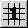
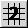
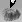
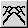
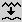
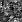
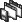
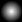
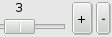

Geomorph - FAQ
FONCTIONNEMENT
FICHIERS
DE SORTIE (PNG)
DIALOGUE
D'APERÇU
INTERFACE
PERFORMANCE,
MÉMOIRE,
STABILITÉ
MOTEUR DE RENDU (POVRAY)
FONCTIONNEMENT
Quelle est la différence entre la
subdivision 1 et la subdivision 2?
Le principe de la subdivision est expliqué dans l'introduction.
Pour déplacer l'altitude des points sur la surface, la
subdivision 1  fait un "OU exclusif" (NOR) avec
des valeurs
aléatoires, tandis que la subdivision 2  additionne
ou soustrait
ces valeurs (les "creux"
et les "bosses"). Le traitement est beaucoup plus rapide avec un
NOR. Entre
autres, le programme n'a pas à gérer les
débordements,
sous 0 ou par-dessus 65535. C'est d'ailleurs la subdivision 1 que
dessine
par défaut le "crayon relief".
Les reliefs créés par la subdivision 1 sont
différents, plus "bruts", comme stratifiés avec beaucoup
de bruit. Ils sont parfois plus intéressants que ceux de la
subdivision 2.
La subdivision 1 offre cependant moins de contrôle sur le
résultat que la subdivision 2. La subdivision 2 offre un
paramètre de contrôle de la distribution des "bosses"
et des "creux" de façon à ce qu'ils ne soient pas trop
régulièrement répartis. L'amplitude des
longeurs
d'onde est aussi contrôlable. Une amplitude de 0 permet de
retirer sélectivement des fréquences. Par
exemple, le retrait des hautes fréquences (longueurs d'onde de
2, 4 ou 8 pixels) donne l'équivalent d'une image de relief
lissée avec un rayon de 8 pixels à l'aide de la
boîte à outil.
À
quoi sert la "racine"?
La "racine" est un nombre servant de point de départ
au générateur de nombres pseudo-aléatoires du
système d'exploitation.
Geomorph utilise souvent des valeurs aléatoires, par exemple
pour déplacer la hauteur d'un sommet lors de la subdivision,
pour déplacer une bosse ou une autre surface sur le sol dans la
génération de reliefs par addition de surfaces, ou pour
générer du bruit.
Sans ces corrections aléatoires, il ne serait pas possible de
générer des reliefs réalistes. Mettez le
paramètre "Déplacement XY" à 0 dans l'addition
progressive de surfaces  et faites "Activer", pour vous en
convaincre.
En précisant la racine de départ, qui est inscrite dans
le fichier de configuration "geomorphrc", les résultats
deviennent reproductibles (d'où l'expression
"pseudo-aléatoire"). Ainsi, les algorithmes de
génération de reliefs devraient toujours donner le
même résultat au démarrage de
Geomorph, ou lorsqu'on tape manuellement une racine en particulier.
FICHIERS
DE SORTIE (PNG)
Pourquoi avoir choisi le format PNG?
Une image de relief de qualité requiert des valeurs
exprimées sur 16 bits, c'est-à-dire offrant 65536 nuances
ou niveaux d'altitude distincts. Habituellement, les images sont
exprimées sur 8 bits et offrent 256 nuances par couleur ou
"canal".
Les images de relief sont monochromes. Lorsqu'on les exprime sur 8
bits, on obtient une échelle réduite à 256
altitudes distinctes. Le rendu final du relief peut alors montrer un
effet d'escalier désagréable.
PNG est un des rares formats gérant des images de 16 bits
par canal. Il est reconnu par de nombreux logiciels, dont Povray, et
permet la compression sans perte. Le format est très souple et
permet
de sauvegarder des commentaires et d'autres informations descriptives
avec
l'image. Ainsi, Geomorph écrit dans chaque image PNG qu'il
créée si celle-ci est pavable ou non (si elle
"s'enroule"). Enfin, c'est un standard libre de droits,
créé pour éviter des situations comme celles
vécues avec le format GIF il y a quelques années.
Comment importer des images
externes dans Geomorph?
Vous devez utiliser un logiciel qui reconnaît le
format de votre image externe, peut en changer l'échelle pour
que sa grandeur soit compatible avec Geomorph et enregistre le
résultat en format PNG.
Geomorph reconnaît des images PNG carrées de 128, 256,
512, 1024, 2048 ou 4096 pixels de côté. Il ne fait pas
encore de conversion d'échelle. Cependant, il transforme
les images RGB en nuances de gris, et les canaux de 8 bits (256
nuances) en canaux
de 16 bits (65536 nuances).
GIMP est un bon choix pour rogner ou mettre à l'échelle
une image d'une profondeur de 8 bits, en noir et blanc ou en couleurs,
et la sauvegarder en PNG 8 bits. Geomorph n'aura pas de
difficulté
à la lire.
L'outil "lissage"  avec un petit rayon permet
d'atténuer l'effet
de stratification du à la conversion d'une image de 256 valeurs
en image de 65536 valeurs. L'outil "bruit"  permet
d'ajouter des hautes
fréquences et d'obtenir une apparence plus natuelle.
Comment éditer des images
produites par Geomorph sans perdre les nuances de tonalité?
Geomorph ne répond probablement pas à tous
les besoins
d'édition d'images de relief. Vous désirerez
peut-être
utiliser un logiciel de dessin externe.
GIMP v. 1.x et v. 2.x lisent les images 16 bits créées
par
Geomorph, mais les ramènent à 8 bits (256 nuances
plutôt
que 65536).
Filmgimp (maintenant Cinepaint - voir cinepaint.sourceforge.net)
lit et sauvegarde des images PNG à canaux de 16 bits. Même
si le logiciel est conçu pour l'édition de films, il peut
être utilisé pour éditer des images fixes.
Je ne connais pas d'autre logiciel libre qui édite des images
à canaux de 16 bits.
DIALOGUE
D'APERÇU
L'affichage 3D de
l'aperçu disparaît parfois. Que puis-je faire?
Ce problème ne semble se
produire que sous KDE, pas sous Gnome. J'en ignore l'origine.
La seule solution est de cliquer sur le bouton "Rafraîchir" de
l'aperçu.
Le
dialogue d'aperçu ne s'affiche pas du tout lorsque je
démarre Geomorph, et j'obtiens un message comme quoi OpenGL
n'est pas disponible. Est-ce normal?
Ce problème a été
observé dans 2 situations:
1. Geomorph 0.30 est utilisé avec une carte Nvidia
récente et le pilote fourni par Nvidia. La solution est de
mettre à jour Geomorph à la version 0.31 ou
ultérieure. À partir de la version 0.31, la librairie
libgtkglext est utilisée à la place de libgtkglarea, ce
qui corrige le problème.
2. Il pourrait arriver, bien que ce soit peu probable, que le module
"glx" (couche 3D) ne soit pas chargé par le système
X-Windows.
Vérifiez si "glx" est spécifié dans la section
"Module" du fichier de configuration
/etc/X11/xorg.conf (si vous utilisez Xorg) ou /etc/X11/XF86Config ou
/etc/X11/XF86Config-4 (si
vous utilisez XFree86). Cette section devrait ressembler
à
ceci:
Section "Module"
Load "dbe" #
Double-Buffering Extension
Load "type1"
Load "freetype"
Load "extmod"
Load "v4l" #
Video for Linux
Load "glx" #
3D layer
Load "dri" #
direct rendering
EndSection
Si "glx" est demandé, vérifiez dans le journal
/var/log/Xorg.0.log ou /var/log/XFree86.0.log s'il est chargé
avec succès.
La commande "glxinfo" exécutée dans une console X pourra
aussi vous indiquer si les extensions glx sont disponibles, si cette
commande existe sur votre système.
Si les extensions GLX sont disponibles et que l'aperçu ne
s'affiche toujours pas, contactez-moi.
L'accélération matérielle du système
d'affichage est fournie par le module DRI ("direct rendering
infrastructure") du pilote de la carte vidéo.
L'accélération matérielle peut améliorer la
vitesse de rotation ou de déplacement de l'aperçu du
terrain, en accélérant les appels OpenGL. Cependant, elle
n'a aucun effet sur la vitesse de rafraîchissement du terrain. Le
maillage de l'aperçu est recalculé après toute
modification du terrain. C'est la partie la plus lourde du traitement,
et elle a lieu avant tout appel à la librairie OpenGL.
De plus, l'activation du module DRI peut provoquer ces problèmes:
- Une utilisation anormale de la mémoire,
apparemment reliée à l'interaction entre le
pilote de la carte vidéo, le sous-système X-Windows et le
noyau Linux. Ce problème semblait généralisé vers 2005-2006 (Geomorph
0.31), mais s'est progressivement corrigé avec les mises à jour des
pilotes, du noyau ou de X-Windows. Il peut encore être vu avec du
nouveau matériel et des pilotes immatures, comme par exemple, sur
l'ordinateur portable de 2008 sur lequel ce texte est révisé, doté d'un
accélérateur graphique Intel X3100...
- Des erreurs de segmentation lorsque les documents sont
enregistrés un par un (observées avec une carte Matrox
G400, non rapporté pour d'autres cartes jusqu'à
présent).
Geomorph 0.31 permet de spécifier si
l'accélération matérielle est activée ou
non, seulement pour Geomorph, sans effet sur les autres applications.
En raison du peu de bénéfices et des problèmes
mentionnés, Geomorph 0.31 est livré avec
l'accélération matérielle
désactivée. Cependant, vous pouvez l'activer en utilisant
une de ces méthodes:
- Appelez le dialogue d'options  dans la barre du menu, allez
à l'onglet "Aperçu 3D", et changez la valeur de la
variable "Accélération matérielle" de FALSE ou
<aucune valeur> à TRUE.
- Éditez le fichier "geomorphrc" (habituellement dans
/home/<vous>/geomorph/). Dans la section [3d_preview], changez
"direct_rendering = FALSE" à TRUE, ou ajoutez la ligne si elle
n'existe pas.
INTERFACE
Dans
le dialogue de l'outil XYZ, la liste des documents disponibles ne
montre pas le
document que je viens de créer. Comment la rafraîchir?
Un nouveau clic sur
l'icône de l'outil rafraîchira la liste des documents
ouverts.
Ce comportement se rencontrera dans l'outil "fusion"

ou dans
l'option
"Filtrer avec un document ouvert" du filtre de forme .
J'ai ajouté
du bruit à haute fréquence sur le relief, mais je ne le
vois pas. Que puis-je faire?
Le bruit de haute fréquence ne
s'affiche pas en projection 2D, et est très difficile à
voir dans l'aperçu. Pour bien le voir, il faut exécuter
une scène Povray.
Pourquoi? Supposons que la hauteur est sensiblement proportionnelle
à l'étendue du sol, sur une image de 512x512 dont
l'altitude maximale varie de 214 à 215.
Les longueurs d'onde de l'ordre de 2 pixels varieront d'une altitude
d'environ 26 à 27. Comme l'affichage
se fait obligatoirement avec 256 valeurs (28) plutôt
que 65536 (216), il faut diviser les valeurs d'altitude
par 256 avant de les afficher. Les hautes fréquences tombent
ainsi à 0 et ne sont pas affichables.
Pourquoi tous les titres de menus, de
boutons, ainsi que tous les messages d'erreur s'affichent-ils en
pseudo-anglais, avec des abréviations et en lettres majuscules?
Ce problème est disparu depuis la version 0.21.
J'ai
installé Geomorph 0.2x ou 0.3x après
avoir désintallé 0.1x, et l'icône du raccourci sur
mon
bureau est disparu, même si le raccourci est demeuré.
Où
se trouve-t-il?
L'emplacement de cet icône a changé. Il se
trouve à partir de la version 0.20 à l'adresse
/usr/local/share/geomorph/GeoMorph.xpm. Modifiez les
propriétés de votre raccourci pour qu'il pointe sur cette
adresse.
PERFORMANCE,
MÉMOIRE, STABILITÉ
Geomorph est lent!
J'ai de la difficulté à dessiner ou à
déplacer les curseurs des échelles. Que puis-je faire?
Geomorph est lent lorsque les images
éditées sont trop grandes pour la
puissance du processeur.
Règle générale, le ralentissement commence
à être sensible lorsque la
grandeur linéaire de l'image correspond à la vitesse du
processeur.
Ainsi, l'édition d'une image de 2048x2048 sera laborieuse sur
les
processeurs de 2 Ghz. C'est très approximatif: une image de
2048x2048
est 4 fois plus grande qu'une image de 1024x1024, mais un processeur de
2Ghz risque d'être plus de deux fois plus puissant qu'un
processeur de
1Ghz - en effet on risque d'avoir changé de
génération de processeur en passant de 1Ghz à 2Ghz.
À partir de la version 0.30, quelques stratégies sont
utilisées
pour faciliter
l'édition de grandes images. Par
exemple, lorsque le curseur de certaines échelles est
déplacé, l'aperçu
n'est pas rafraîchi avant le relâchement du bouton de
souris. Des
boutons ont aussi été ajoutés à
côté ou en-dessous de plusieurs échelles pour
déplacer le curseur par incréments . C'est
encore
perfectible,
contactez-moi si vous identifiez des possibilités ou des besoins
d'amélioration.
Enfin, il n'est pas recommandé d'utiliser Geomorph en
réseau, c'est-à-dire lorsque le programme
s'exécute
sur l'ordinateur A et
est affiché sur le poste B par le système X-Windows.
J'obtiens un
message à l'effet qu'il manque de mémoire quand je tente
de créer un nouveau document. Que faire?
Sauvegardez tous vos documents, et
redémarrez Geomorph.
Il y a au moins deux raisons possibles à ce manque de
mémoire:
- Vous avez ouvert trop de documents à la fois pour la
mémoire physique de votre ordinateur. En principe, Geomorph
fonctionne sur une machine de 256 Mo. Cependant, vous pouvez
éprouver des difficultés même avec cette
quantité de mémoire, par exemple si vous augmentez le
nombre de niveaux d'annulation de 5 à 10 et ouvrez de nombreux
documents. Dans ce cas, fermer des documents libérera de la
mémoire, mais le mieux est encore de redémarrer
l'application.
- L'accélération
matérielle de votre carte
vidéo est activée (module DRI - direct rendering). Sur la plupart des
systèmes testés il y a quelques années (~2005-2006), cela entrainaît
une utilisation
anormale de la mémoire. À partir de la version 0.31, vous
pouvez désactiver l'accélération matérielle
pour Geomorph seulement, sans la désactiver pour l'ensemble de
votre système, avant de redémarrer Geomorph. Voir cette question.
À l'exception du problème de mémoire relié
à l'accélération matérielle, qui ne
dépend pas de Geomorph, la version 0.31 perd environ 250 k de
mémoire à chaque document ouvert et refermé.
Selon que l'accélération
matérielle de la carte vidéo est activée ou non,
et selon qu'elle est activée pour Geomorph ou seulement pour les
autres applications X-Windows, l'affichage de la barre de
menu avec un seul document de 512x512 peut requérir de 20
à 50 Mo.
Sans accélération matérielle, chaque document
supplémentaire de 512x512 requiert
environ 2 Mo, ou 10 Mo lorsque 5 niveaux de l'historique sont remplis.
Autrement, l'usage est très variable selon la distribution et le
pilote de la carte vidéo,
allant de 10 Mo à 30 Mo supplémentaires par document
(historique non rempli), et la mémoire n'est pas toute
libérée lors de la fermeture d'un document. La fermeture
de Geomorph, cependant, libère toute la mémoire.
Geomorph s'interrompt
avec une erreur quand je tente d'ouvrir un document, après avoir
fermé tous les autres documents. Que faire?
Essayez de désactiver l'accélération
matérielle pour Geomorph. C'est possible depuis la version 0.31.
Voir cette question.
Ce problème a été
corrigé dans la version 0.31. Il se produisait lorsque le
document à cloner n'était pas enregistré.
Maintenant, Geomorph demande d'enregistrer le document avant le clonage.
MOTEUR
DE RENDU (POVRAY)
Quand je clique sur l'icône de rendu  , il ne se passe rien. Que puis-je faire?
, il ne se passe rien. Que puis-je faire?
Ces explications valent pour POV-Ray 3.6.
En premier lieu, démarrez Geomorph à partir d'une console afin de voir les messages retournés par POV-Ray.
Si POV-Ray ne démarre pas du tout, lisez la prochaine question. Geomorph devrait probablement geler.
Si
POV-Ray démarre mais n'affiche aucune image, la sortie de POV-Ray
(d'habitude très longue!) devrait contenir un message d'erreur, à
quelque part.
Si le message dit quelque chose au sujet d'un
fichier "povray.conf" manquant ("missing"), vérifiez si vous avez un
tel fichier dans votre répertoire /home/.../.povray/3.6. Ce fichier est
apparu avec la version 3.6 pour ajouter des contrôles de sécurité. Si
le fichier est absent, créez-le:
- Si vous avez installé
POV-Ray à partir de www.povray.org, un script "install" devrait être
inclus. Exécutez ce script avec l'option "user": tapez "./install user"
dans le répertoire où l'archive est décompressée (sans les guillemets!).
- Si
vous avez installé l'application avec un paquet de votre distribution,
il se peut que vous ayez à créer des répertoires .povray et .povray/3.6
dans votre répertoire personnel, et à y copier le fichier povray.conf
par défaut. Vous pouvez aussi y copier le fichier povray.ini par
défaut. Ces fichiers peuvent être trouvés à des endroits comme
/etc/povray/3.6 (Ubuntu 7.x),
/usr/local/etc/povray/3.6 (Fedora 8), etc. - vérifiez la liste des
fichiers avec votre gestionnaire d'archives.
- Dans
povray.conf, assurez-vous d'inscrire une entrée pour votre répertoire
personnel (ou /home/.../geomorph, si vous voulez être plus
restrictif) dans la section [Permitted Paths]. Cette entrée devrait se
lire comme suit: "read+write* = /home/your_id/geomorph"
(sans les guillemets!).
Si le message n'est pas relié povray.conf, peut-être avez-vous fait une erreur en modifiant le script POV-Ray?
Si
vous ne trouvez pas de solution, copiez et collez-moi la sortie texte
de la console dans un courriel. Je vais voir ce que je peux peux faire.
Pourquoi
Geomorph gèle-t-il quand j'exécute Povray en cliquant sur
l'icône de rendu ?
Geomorph ne trouve pas
l'exécutable de Povray, soit que Povray n'est pas
installé, soit que le nom de l'exécutable n'est pas bien
écrit dans le fichier d'options ~/geomorph/geomorphrc.
Vérifiez la variable "renderer" dans "geomorphrc", ou passez par
le dialogue des options dans la barre de menu de Geomorph pour
vérifier le nom de l'exécutable. Pour savoir si
l'exécutable existe, faites "which <nom>" dans une console
(ex. "which povray36").
Lorsque Geomorph est gelé, vous devez tuer le processus avec
xkill ou kill -9 <pid> dans une console.
L'image
Povray disparaît dès qu'elle s'affiche. Que puis-je faire?
Il faut ajouter l'option "Pause"
lors de l'exécution de Povray. Il y a trois façons de le
faire:
- Allez dans le dialogue d'options de la barre de menus, ajoutez
l'option +P dans
l'item "Autres
options de
rendu sur la ligne de commande" de l'onglet "Rendu d'illumination 3D".
- Modifiez directement la variable other_render_options dans
le fichier ~/geomorph/geomorphrc:
[rendering]
...
other_render_options = +P +D -F +L/home/.../geomorph;
- Insérez la ligne Pause_when_Done
=
on dans le fichier ~/.povrayrc,
si vous en avez un. Vous pouvez
copier ce
fichier de /usr/lib/povray-3.6/ini/povray.ini.
Pourquoi
ne pas offrir des rendus avec un autre moteur de rendu que Povray,
comme Aqsis ou YafRay par exemple?
Aqsis et YafRay sont des moteurs de
rendu libres, couverts par le premier par la GPL, le second par la
LGPL, contrairement à la version actuelle de Povray (3.6).
Pourquoi ne pas avoir choisi d'interfacer avec un moteur de rendu libre
plutôt que Povray? Je n'en connaissais pas
d'autres moteurs de rendu que Povray lorsque j'ai commencé le
développement de
Geomorph. Je n'ai pas d'objection de principe à produire des
sorties pour Aqsis ou d'autres moteurs. C'est simplement une question
de manque d'expertise et de temps pour apprendre les interfaces puis
développer les fonctions nécessaires. Je crois que ces
deux moteurs de rendu ne traitent pas directement les images de relief
et qu'il faut auparavant les transformer en treillis (mesh).
L'exécution risque d'être lente, mais c'est
réalisable. Un bon sujet de contribution pour les
intéressés!
Révisé le 25 novembre 2005, le 27 janvier 2007 et le 1er août 2008
Contact: Patrice St-Gelais